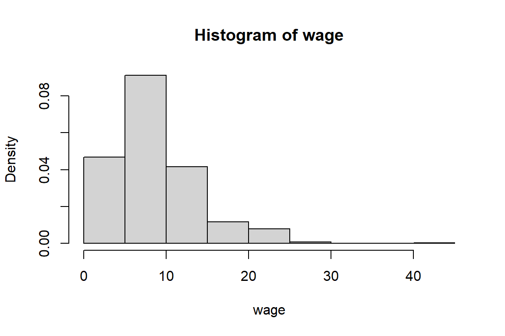
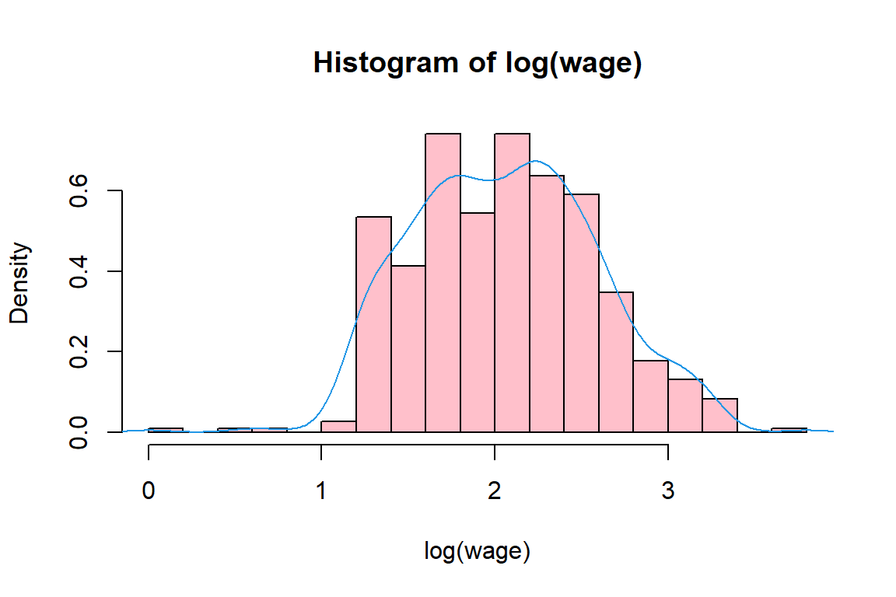

10 Linear Regression Models in R
You’ll journey as a model builder in R will start from studying linear models and the use of the lm function.
10.1 A simple linear regression model
You analayze Ford dealership data as registered in Milwaukee, September/October 1990. Data on 62 credit card applicants are available, including the car purchase price \(Y\) and the applicant’s annual income \(X\). Data are available in the .csv file car_price.
You first load and explore the data.
path <- file.path('data')
path.car <- file.path(path, "car_price.csv")
car_price <- read.csv(path.car)Then you explore the data.
attach(car_price)
summary(price) Min. 1st Qu. Median Mean 3rd Qu. Max.
7200 11850 14500 15416 18500 28000 summary(income) Min. 1st Qu. Median Mean 3rd Qu. Max.
15000 30500 40950 45190 55500 102000 # average
mean(price)[1] 15416mean(income)[1] 45190# standard deviation
sd(price)[1] 5040.4sd(income)[1] 20873# the 5-th and 95-th percentiles
quantile(price, c(0.05, 0.95)) 5% 95%
7830 25900 quantile(income, c(0.05, 0.95)) 5% 95%
18150 85700 # histograms of price and income
# density histogram for 'price'
hist(price, br = 20, xlim = c(5000, 30000), col="grey", freq=FALSE)
lines(density(price), col=4)
# frequency histogram for 'income/1000'
hist(income/1000, br=10, xlab="income (in $000's)", xlim=c(0, 120), col="grey")
# scatter plot 'income/1000' versus 'price'
plot(income/1000, price, pch=21, cex=1.2, xlab="income (in $000's)")
detach(car_price)Explore the data with ggplot.
library("ggplot2")
ggplot(car_price, aes(x = income/1000, y = price)) +
theme_bw() +
geom_point(shape=1, alpha = 1/2) +
geom_smooth() `geom_smooth()` using method = 'loess'
You will now fit a simple regression model with income as predictor to purchase price. You assign the output of the lm function to the object lm1.
lm1 <- lm(price ~ income, data = car_price)
summary(lm1)
Call:
lm(formula = price ~ income, data = car_price)
Residuals:
Min 1Q Median 3Q Max
-5365 -1185 -251 1334 6284
Coefficients:
Estimate Std. Error t value Pr(>|t|)
(Intercept) 5.87e+03 7.50e+02 7.82 9.8e-11 ***
income 2.11e-01 1.51e-02 14.01 < 2e-16 ***
---
Signif. codes: 0 '***' 0.001 '**' 0.01 '*' 0.05 '.' 0.1 ' ' 1
Residual standard error: 2460 on 60 degrees of freedom
Multiple R-squared: 0.766, Adjusted R-squared: 0.762
F-statistic: 196 on 1 and 60 DF, p-value: <2e-16# check attributes of object 'lm1'
names(lm1) [1] "coefficients" "residuals" "effects" "rank"
[5] "fitted.values" "assign" "qr" "df.residual"
[9] "xlevels" "call" "terms" "model" # some useful stuff: 'coefficients', 'residuals', 'fitted.values', 'model'
lm1$coef(Intercept) income
5866.33390 0.21132 lm1$residuals 1 2 3 4 5 6 7 8
-719.290 1146.822 4329.836 3258.062 -3649.431 -483.570 4144.823 -1206.051
9 10 11 12 13 14 15 16
-664.585 480.710 6284.374 -1040.023 -4383.403 -1262.670 -4421.372 4273.216
17 18 19 20 21 22 23 24
-1373.761 33.583 -1051.346 -1102.387 1392.034 -1836.192 54.316 167.554
25 26 27 28 29 30 31 32
-257.092 -877.824 3124.091 1427.921 367.554 -2355.177 77.679 -2462.670
33 34 35 36 37 38 39 40
1159.977 -274.078 732.384 -2707.167 -2566.817 -1120.805 5129.669 2895.864
41 42 43 44 45 46 47 48
1111.484 2197.613 1971.301 -883.403 3129.669 1744.823 1026.006 142.908
49 50 51 52 53 54 55 56
-3653.428 190.119 -1616.575 -1085.318 -1866.501 -4379.739 1980.943 -40.023
57 58 59 60 61 62
3735.415 -1000.472 -672.079 -245.684 -1087.233 -5364.585 lm1$fitted.values 1 2 3 4 5 6 7 8 9 10
14319.3 9353.2 9670.2 14741.9 11149.4 22983.6 16855.2 12206.1 15164.6 14319.3
11 12 13 14 15 16 17 18 19 20
21715.6 12840.0 11783.4 13262.7 27421.4 10726.8 23173.8 11466.4 13051.3 19602.4
21 22 23 24 25 26 27 28 29 30
14108.0 9036.2 12945.7 10832.4 18757.1 17277.8 15375.9 11572.1 10832.4 16855.2
31 32 33 34 35 36 37 38 39 40
15122.3 13262.7 12840.0 19074.1 15967.6 11107.2 12966.8 14720.8 20870.3 10304.1
41 42 43 44 45 46 47 48 49 50
25688.5 19602.4 12628.7 11783.4 20870.3 16855.2 13474.0 18757.1 26153.4 16009.9
51 52 53 54 55 56 57 58 59 60
9416.6 13685.3 17066.5 19179.7 24019.1 12840.0 15164.6 17700.5 11572.1 12945.7
61 62
15587.2 15164.6 # use built-in plot function
# you may have noticed that we have used the function plot with all kinds of arguments:
# one or two variables, a data frame, and now a linear model fit;
# in R jargon plot is a generic function; it checks for the kind of object that you # are plotting and then calls the appropriate (more specialized) function to do the work.
plot(lm1)

# add the regression line to the scatter plot
plot(car_price$income, car_price$price, pch=21, cex=1.2, xlab = "income", main = "Simple linear regression")
# add LS line like this
abline(lm1, col="blue", lwd=2)
# or like this
abline(lm1$coefficients[1], lm1$coefficients[2]) Similarly, you can illustrate the fit with
Similarly, you can illustrate the fit with ggplot.
ggplot(car_price, aes(x = income, y = price)) +
theme_bw() +
geom_point(shape=1, alpha = 1/2) +
geom_smooth()+geom_abline(intercept = lm1$coef[1], slope = lm1$coef[2], colour="red", size=2) `geom_smooth()` using method = 'loess' You can graphically illustrate what vertical distance means.
You can graphically illustrate what vertical distance means.
plot(car_price$income, car_price$price, pch=21, cex=1.2, xlab = "income", main = "Simple linear regression")
abline(lm1, col = "blue", lwd=2)
segments(car_price$income, car_price$price, car_price$income, lm1$fitted.values, lty=1) Get the anova table.
Get the anova table.
# anova table
anova(lm1)Analysis of Variance Table
Response: price
Df Sum Sq Mean Sq F value Pr(>F)
income 1 1.19e+09 1.19e+09 196 <2e-16 ***
Residuals 60 3.63e+08 6.05e+06
---
Signif. codes: 0 '***' 0.001 '**' 0.01 '*' 0.05 '.' 0.1 ' ' 1attach(car_price)
total.SS <- sum((price-mean(price))^2)
total.SS[1] 1549743871error.SS <- sum(lm1$resid^2)
error.SS[1] 362851718# R^2?
(total.SS-error.SS)/total.SS[1] 0.76586# F-statistic in anova?
lm0 <- lm(price ~ 1)
error0.SS <- sum(lm0$resid^2)
# calculate F-statistic
F <- ((anova(lm0)$"Sum Sq")-(anova(lm1)$"Sum Sq"[2]))/(anova(lm1)$"Mean Sq"[2])
# critical values
qf(0.95, 1, 60)[1] 4.00121-pf(F, 1, 60)[1] 0detach(car_price)10.2 A multiple linear regression model
You’ll now move on from simple to multiple linear regression. You model the data by McDonald and Schwing (1973) published in Technometrics. The sampled data consists of vars obtained for year 1960 for 60 Standard Metropolitan Statistical Areas (SMSA) in the US. The goal is to relate mortality in these SMSA to explanatory variables. For each sample area, we have information concerning the age-adjusted mortality rate for all causes, expressed as deaths per 100,000 population. This will be our response variable. The list of explanatory variables is:
- weather-related variables:
prec: average annual precipitation in inchesjant: average January temperature in degrees Fjult: average July temperature in degrees Fhumid: annual average % relative humidity at 1 pm- scocio-economic characteristics:
ovr65: % of 1960 SMSA population aged 65 and olderpopn: average household sizeeduc: median school years completed by those over 22hous: % of housing units which are sound and with all facilitieseduc: median school years completed by those over 22dens: population per sq mile in urbanized areas, 1960nonw: % of non-white population in urbanized areas, 1960wwdrk: % of employed in white collar occupationspoor: % of families with income less than $3,000- pollutants:
hc: relative pollution potential of hydrocarbonsnox: relative pollution potential of oxides of nitrogenso2: relative pollution potential of sulfur dioxides
First, you’ll load the data.
path <- file.path('data')
path.mort <- file.path(path, "pollution.csv")
mort_poll <- read.csv(path.mort)Then, you’ll explore the data.
attach(mort_poll)The following objects are masked from mort_poll (pos = 3):
dens, educ, hc, hous, humid, jant, jult, mort, nonw, nox, ovr65,
poor, popn, prec, so2, wwdrkThe following objects are masked from mort_poll (pos = 4):
dens, educ, hc, hous, humid, jant, jult, mort, nonw, nox, ovr65,
poor, popn, prec, so2, wwdrkThe following objects are masked from mort_poll (pos = 6):
dens, educ, hc, hous, humid, jant, jult, mort, nonw, nox, ovr65,
poor, popn, prec, so2, wwdrksummary(mort_poll) prec jant jult ovr65 popn
Min. :10.0 Min. :12.0 Min. :63.0 Min. : 5.60 Min. :2.92
1st Qu.:32.8 1st Qu.:27.0 1st Qu.:72.0 1st Qu.: 7.67 1st Qu.:3.21
Median :38.0 Median :31.5 Median :74.0 Median : 9.00 Median :3.27
Mean :37.4 Mean :34.0 Mean :74.6 Mean : 8.80 Mean :3.26
3rd Qu.:43.2 3rd Qu.:40.0 3rd Qu.:77.2 3rd Qu.: 9.70 3rd Qu.:3.36
Max. :60.0 Max. :67.0 Max. :85.0 Max. :11.80 Max. :3.53
educ hous dens nonw wwdrk
Min. : 9.0 Min. :66.8 Min. :1441 Min. : 0.80 Min. :33.8
1st Qu.:10.4 1st Qu.:78.4 1st Qu.:3104 1st Qu.: 4.95 1st Qu.:43.2
Median :11.1 Median :81.2 Median :3567 Median :10.40 Median :45.5
Mean :11.0 Mean :80.9 Mean :3876 Mean :11.87 Mean :46.1
3rd Qu.:11.5 3rd Qu.:83.6 3rd Qu.:4520 3rd Qu.:15.65 3rd Qu.:49.5
Max. :12.3 Max. :90.7 Max. :9699 Max. :38.50 Max. :59.7
poor hc nox so2 humid
Min. : 9.4 Min. : 1.0 Min. : 1.0 Min. : 1.0 Min. :38.0
1st Qu.:12.0 1st Qu.: 7.0 1st Qu.: 4.0 1st Qu.: 11.0 1st Qu.:55.0
Median :13.2 Median : 14.5 Median : 9.0 Median : 30.0 Median :57.0
Mean :14.4 Mean : 37.9 Mean : 22.6 Mean : 53.8 Mean :57.7
3rd Qu.:15.2 3rd Qu.: 30.2 3rd Qu.: 23.8 3rd Qu.: 69.0 3rd Qu.:60.0
Max. :26.4 Max. :648.0 Max. :319.0 Max. :278.0 Max. :73.0
mort
Min. : 791
1st Qu.: 898
Median : 944
Mean : 940
3rd Qu.: 983
Max. :1113 # get correlation matrix
round(cor(mort_poll), 4) prec jant jult ovr65 popn educ hous dens nonw
prec 1.0000 0.0922 0.5033 0.1011 0.2634 -0.4904 -0.4908 -0.0035 0.4132
jant 0.0922 1.0000 0.3463 -0.3981 -0.2092 0.1163 0.0149 -0.1001 0.4538
jult 0.5033 0.3463 1.0000 -0.4340 0.2623 -0.2385 -0.4150 -0.0610 0.5753
ovr65 0.1011 -0.3981 -0.4340 1.0000 -0.5091 -0.1389 0.0650 0.1620 -0.6378
popn 0.2634 -0.2092 0.2623 -0.5091 1.0000 -0.3951 -0.4106 -0.1843 0.4194
educ -0.4904 0.1163 -0.2385 -0.1389 -0.3951 1.0000 0.5522 -0.2439 -0.2088
hous -0.4908 0.0149 -0.4150 0.0650 -0.4106 0.5522 1.0000 0.1819 -0.4103
dens -0.0035 -0.1001 -0.0610 0.1620 -0.1843 -0.2439 0.1819 1.0000 -0.0057
nonw 0.4132 0.4538 0.5753 -0.6378 0.4194 -0.2088 -0.4103 -0.0057 1.0000
wwdrk -0.2973 0.2380 -0.0214 -0.1177 -0.4257 0.7032 0.3387 -0.0318 -0.0044
poor 0.5066 0.5653 0.6193 -0.3098 0.2599 -0.4033 -0.6807 -0.1629 0.7049
hc -0.5318 0.3508 -0.3565 -0.0205 -0.3882 0.2868 0.3868 0.1203 -0.0259
nox -0.4873 0.3210 -0.3377 -0.0021 -0.3584 0.2244 0.3483 0.1653 0.0184
so2 -0.1069 -0.1078 -0.0993 0.0172 -0.0041 -0.2343 0.1180 0.4321 0.1593
humid -0.0773 0.0679 -0.4528 0.1124 -0.1357 0.1765 0.1219 -0.1250 -0.1180
mort 0.5095 -0.0300 0.2770 -0.1746 0.3573 -0.5110 -0.4268 0.2655 0.6437
wwdrk poor hc nox so2 humid mort
prec -0.2973 0.5066 -0.5318 -0.4873 -0.1069 -0.0773 0.5095
jant 0.2380 0.5653 0.3508 0.3210 -0.1078 0.0679 -0.0300
jult -0.0214 0.6193 -0.3565 -0.3377 -0.0993 -0.4528 0.2770
ovr65 -0.1177 -0.3098 -0.0205 -0.0021 0.0172 0.1124 -0.1746
popn -0.4257 0.2599 -0.3882 -0.3584 -0.0041 -0.1357 0.3573
educ 0.7032 -0.4033 0.2868 0.2244 -0.2343 0.1765 -0.5110
hous 0.3387 -0.6807 0.3868 0.3483 0.1180 0.1219 -0.4268
dens -0.0318 -0.1629 0.1203 0.1653 0.4321 -0.1250 0.2655
nonw -0.0044 0.7049 -0.0259 0.0184 0.1593 -0.1180 0.6437
wwdrk 1.0000 -0.1852 0.2037 0.1600 -0.0685 0.0607 -0.2848
poor -0.1852 1.0000 -0.1298 -0.1025 -0.0965 -0.1522 0.4105
hc 0.2037 -0.1298 1.0000 0.9838 0.2823 -0.0202 -0.1772
nox 0.1600 -0.1025 0.9838 1.0000 0.4094 -0.0459 -0.0774
so2 -0.0685 -0.0965 0.2823 0.4094 1.0000 -0.1026 0.4259
humid 0.0607 -0.1522 -0.0202 -0.0459 -0.1026 1.0000 -0.0885
mort -0.2848 0.4105 -0.1772 -0.0774 0.4259 -0.0885 1.0000# create dataframes
# weather related vars
mort_poll_1 <- data.frame(mort, prec, jant, jult, humid)
# socio-economic vars
mort_poll_2 <- data.frame(mort, ovr65, popn, educ, hous, dens, nonw, wwdrk, poor)
# pollution effects
mort_poll_3 <- data.frame(mort, hc, nox, so2)
# matrix scatterplots
pairs(mort_poll_1, cex=1, pch=19)
pairs(mort_poll_2, cex=0.5, pch=19)
pairs(mort_poll_3, cex=1, pch=19)
detach(mort_poll)First, you fit a rather simple linear model to explain mort.
attach(mort_poll)The following objects are masked from mort_poll (pos = 3):
dens, educ, hc, hous, humid, jant, jult, mort, nonw, nox, ovr65,
poor, popn, prec, so2, wwdrkThe following objects are masked from mort_poll (pos = 4):
dens, educ, hc, hous, humid, jant, jult, mort, nonw, nox, ovr65,
poor, popn, prec, so2, wwdrkThe following objects are masked from mort_poll (pos = 6):
dens, educ, hc, hous, humid, jant, jult, mort, nonw, nox, ovr65,
poor, popn, prec, so2, wwdrklm1 <- lm(mort ~ educ + so2)
summary(lm1)
Call:
lm(formula = mort ~ educ + so2)
Residuals:
Min 1Q Median 3Q Max
-136.56 -30.37 -7.73 34.48 148.80
Coefficients:
Estimate Std. Error t value Pr(>|t|)
(Intercept) 1274.602 89.761 14.20 < 2e-16 ***
educ -32.017 8.020 -3.99 0.00019 ***
so2 0.318 0.107 2.97 0.00432 **
---
Signif. codes: 0 '***' 0.001 '**' 0.01 '*' 0.05 '.' 0.1 ' ' 1
Residual standard error: 50.6 on 57 degrees of freedom
Multiple R-squared: 0.36, Adjusted R-squared: 0.338
F-statistic: 16.1 on 2 and 57 DF, p-value: 2.96e-06anova(lm1)Analysis of Variance Table
Response: mort
Df Sum Sq Mean Sq F value Pr(>F)
educ 1 59612 59612 23.26 1.1e-05 ***
so2 1 22642 22642 8.84 0.0043 **
Residuals 57 146054 2562
---
Signif. codes: 0 '***' 0.001 '**' 0.01 '*' 0.05 '.' 0.1 ' ' 1Use the object lm1 to construct confidence and prediction intervals for a single observation.
attach(mort_poll)The following objects are masked from mort_poll (pos = 3):
dens, educ, hc, hous, humid, jant, jult, mort, nonw, nox, ovr65,
poor, popn, prec, so2, wwdrkThe following objects are masked from mort_poll (pos = 4):
dens, educ, hc, hous, humid, jant, jult, mort, nonw, nox, ovr65,
poor, popn, prec, so2, wwdrkThe following objects are masked from mort_poll (pos = 5):
dens, educ, hc, hous, humid, jant, jult, mort, nonw, nox, ovr65,
poor, popn, prec, so2, wwdrkThe following objects are masked from mort_poll (pos = 7):
dens, educ, hc, hous, humid, jant, jult, mort, nonw, nox, ovr65,
poor, popn, prec, so2, wwdrkx0 <- data.frame(educ = 10, so2 = exp(2))
predict(lm1, x0, interval = "confidence") fit lwr upr
1 956.78 932.55 981.01predict(lm1, x0, interval = "prediction") fit lwr upr
1 956.78 852.56 1061detach(mort_poll)and for a grid of educ values, when so2 is fixed.
attach(mort_poll)The following objects are masked from mort_poll (pos = 3):
dens, educ, hc, hous, humid, jant, jult, mort, nonw, nox, ovr65,
poor, popn, prec, so2, wwdrkThe following objects are masked from mort_poll (pos = 4):
dens, educ, hc, hous, humid, jant, jult, mort, nonw, nox, ovr65,
poor, popn, prec, so2, wwdrkThe following objects are masked from mort_poll (pos = 5):
dens, educ, hc, hous, humid, jant, jult, mort, nonw, nox, ovr65,
poor, popn, prec, so2, wwdrkThe following objects are masked from mort_poll (pos = 7):
dens, educ, hc, hous, humid, jant, jult, mort, nonw, nox, ovr65,
poor, popn, prec, so2, wwdrkgrid <- seq(8, 15, 0.1)
x.new <- data.frame(educ = grid, so2 = exp(2))
p <- predict(lm1, x.new, se=TRUE, interval="prediction")
p1 <- predict(lm1, x.new, se=TRUE, interval="confidence")
matplot(grid, p$fit, lty=c(1,2,2), col=c("black", "red", "red"), type = "l", xlab = "educ", ylab = "mort", main = "Predicted mort over a range of educ, log(so2)=2")
matlines(grid, p1$fit, lty = c(1, 2, 2), col = c("black", "blue", "blue"))
rug(educ)
# for an explanation wrt different shapes, see
# http://stats.stackexchange.com/questions/85560/shape-of-confidence-interval-for-p# redicted-values-in-linear-regression
detach(mort_poll)Then you fit a linear model with all 15 variables in the dataset.
attach(mort_poll)The following objects are masked from mort_poll (pos = 3):
dens, educ, hc, hous, humid, jant, jult, mort, nonw, nox, ovr65,
poor, popn, prec, so2, wwdrkThe following objects are masked from mort_poll (pos = 4):
dens, educ, hc, hous, humid, jant, jult, mort, nonw, nox, ovr65,
poor, popn, prec, so2, wwdrkThe following objects are masked from mort_poll (pos = 5):
dens, educ, hc, hous, humid, jant, jult, mort, nonw, nox, ovr65,
poor, popn, prec, so2, wwdrkThe following objects are masked from mort_poll (pos = 7):
dens, educ, hc, hous, humid, jant, jult, mort, nonw, nox, ovr65,
poor, popn, prec, so2, wwdrklm2 <- lm(mort ~ prec + jant + jult + humid + hc + nox + so2 + ovr65 + popn + educ + hous + dens + nonw + wwdrk + poor)
lm2$coef(Intercept) prec jant jult humid hc
1.7640e+03 1.9054e+00 -1.9376e+00 -3.1004e+00 1.0680e-01 -6.7214e-01
nox so2 ovr65 popn educ hous
1.3401e+00 8.6252e-02 -9.0654e+00 -1.0683e+02 -1.7157e+01 -6.5112e-01
dens nonw wwdrk poor
3.6005e-03 4.4596e+00 -1.8706e-01 -1.6764e-01 detach(mort_poll)Now perform model selection stepwise, based on AIC.
# model selection based on AIC
library(MASS)
attach(mort_poll)The following objects are masked from mort_poll (pos = 3):
dens, educ, hc, hous, humid, jant, jult, mort, nonw, nox, ovr65,
poor, popn, prec, so2, wwdrkThe following objects are masked from mort_poll (pos = 4):
dens, educ, hc, hous, humid, jant, jult, mort, nonw, nox, ovr65,
poor, popn, prec, so2, wwdrkThe following objects are masked from mort_poll (pos = 5):
dens, educ, hc, hous, humid, jant, jult, mort, nonw, nox, ovr65,
poor, popn, prec, so2, wwdrkThe following objects are masked from mort_poll (pos = 7):
dens, educ, hc, hous, humid, jant, jult, mort, nonw, nox, ovr65,
poor, popn, prec, so2, wwdrklm1 <- lm(mort ~ 1)
# get AIC, mind the difference
AIC(lm1)[1] 668.92extractAIC(lm1)[1] 1.00 496.65# for linear models with unknown scale (i.e., for lm and aov),
# -2 log L is computed from the deviance and uses a different additive constant to
# logLik and hence AIC
# forward search
stepAIC(lm1, list(upper = ~ prec + jant + jult + ovr65 + popn + educ + hous + dens + nonw + wwdrk + poor + hc + log(nox) + log(so2) + humid, lower = ~ 1), direction = "forward")Start: AIC=496.65
mort ~ 1
Df Sum of Sq RSS AIC
+ nonw 1 94613 133695 467
+ educ 1 59612 168696 480
+ prec 1 59266 169041 481
+ hous 1 41592 186716 487
+ poor 1 38470 189838 488
+ log(so2) 1 37087 191221 488
+ popn 1 29149 199159 490
+ log(nox) 1 19465 208843 493
+ wwdrk 1 18518 209789 494
+ jult 1 17520 210788 494
+ dens 1 16093 212214 494
<none> 228308 497
+ hc 1 7172 221136 497
+ ovr65 1 6960 221347 497
+ humid 1 1788 226520 498
+ jant 1 206 228102 499
Step: AIC=466.54
mort ~ nonw
Df Sum of Sq RSS AIC
+ educ 1 33853 99841 451
+ log(so2) 1 31223 102471 453
+ jant 1 29835 103859 453
+ ovr65 1 21435 112259 458
+ wwdrk 1 18153 115541 460
+ dens 1 16540 117155 461
+ prec 1 16324 117371 461
+ hous 1 7264 126430 465
+ log(nox) 1 6836 126859 465
+ hc 1 5892 127803 466
<none> 133695 467
+ jult 1 2973 130721 467
+ popn 1 2112 131582 468
+ poor 1 851 132844 468
+ humid 1 37 133658 469
Step: AIC=451.02
mort ~ nonw + educ
Df Sum of Sq RSS AIC
+ log(so2) 1 18177 81664 441
+ jant 1 17453 82389 441
+ poor 1 10921 88920 446
+ log(nox) 1 8814 91027 447
+ ovr65 1 7352 92489 448
+ dens 1 7262 92579 448
+ jult 1 6836 93005 449
<none> 99841 451
+ prec 1 2468 97373 452
+ hc 1 617 99224 453
+ humid 1 530 99312 453
+ popn 1 359 99482 453
+ hous 1 167 99674 453
+ wwdrk 1 14 99827 453
Step: AIC=440.96
mort ~ nonw + educ + log(so2)
Df Sum of Sq RSS AIC
+ prec 1 9399 72266 436
+ jant 1 7885 73780 437
+ hc 1 6355 75309 438
+ ovr65 1 2770 78895 441
<none> 81664 441
+ poor 1 2236 79428 441
+ dens 1 794 80871 442
+ humid 1 692 80973 442
+ hous 1 538 81126 443
+ log(nox) 1 312 81352 443
+ wwdrk 1 281 81383 443
+ jult 1 132 81532 443
+ popn 1 3 81661 443
Step: AIC=435.63
mort ~ nonw + educ + log(so2) + prec
Df Sum of Sq RSS AIC
+ jant 1 5764 66502 433
+ poor 1 2878 69388 435
<none> 72266 436
+ hc 1 1594 70672 436
+ log(nox) 1 1089 71177 437
+ jult 1 981 71285 437
+ dens 1 752 71513 437
+ humid 1 508 71758 437
+ wwdrk 1 405 71861 437
+ hous 1 125 72141 438
+ popn 1 70 72196 438
+ ovr65 1 2 72263 438
Step: AIC=432.64
mort ~ nonw + educ + log(so2) + prec + jant
Df Sum of Sq RSS AIC
+ log(nox) 1 8313 58188 427
<none> 66502 433
+ popn 1 1724 64778 433
+ dens 1 1455 65047 433
+ jult 1 1097 65405 434
+ humid 1 958 65544 434
+ poor 1 474 66028 434
+ hous 1 74 66428 435
+ ovr65 1 56 66446 435
+ wwdrk 1 27 66475 435
+ hc 1 25 66477 435
Step: AIC=426.63
mort ~ nonw + educ + log(so2) + prec + jant + log(nox)
Df Sum of Sq RSS AIC
+ popn 1 2793 55396 426
<none> 58188 427
+ dens 1 1379 56810 427
+ hc 1 792 57396 428
+ jult 1 43 58145 429
+ poor 1 25 58164 429
+ humid 1 16 58172 429
+ hous 1 8 58181 429
+ wwdrk 1 6 58182 429
+ ovr65 1 0 58188 429
Step: AIC=425.67
mort ~ nonw + educ + log(so2) + prec + jant + log(nox) + popn
Df Sum of Sq RSS AIC
<none> 55396 426
+ ovr65 1 1802 53594 426
+ hc 1 1587 53809 426
+ dens 1 570 54826 427
+ jult 1 142 55254 428
+ wwdrk 1 129 55267 428
+ poor 1 54 55341 428
+ humid 1 10 55386 428
+ hous 1 4 55392 428
Call:
lm(formula = mort ~ nonw + educ + log(so2) + prec + jant + log(nox) +
popn)
Coefficients:
(Intercept) nonw educ log(so2) prec jant
1315.91 4.50 -19.04 -6.15 2.19 -2.86
log(nox) popn
24.01 -73.76 # backward search
lm1 <- lm(mort ~ prec + jant + jult + ovr65 + popn + educ + hous + dens + nonw +
wwdrk + poor + hc + log(nox) + log(so2) + humid)
stepAIC(lm1, list(upper = ~ prec + jant + jult + ovr65 + popn + educ + hous + dens + nonw + wwdrk + poor + hc + log(nox) + log(so2) + humid, lower = ~ 1), direction = "backward")Start: AIC=435.55
mort ~ prec + jant + jult + ovr65 + popn + educ + hous + dens +
nonw + wwdrk + poor + hc + log(nox) + log(so2) + humid
Df Sum of Sq RSS AIC
- poor 1 1 50019 434
- hous 1 224 50243 434
- wwdrk 1 447 50465 434
- dens 1 448 50467 434
- humid 1 704 50723 434
- ovr65 1 1490 51508 435
- jult 1 1543 51562 435
<none> 50019 436
- log(so2) 1 1758 51776 436
- hc 1 1879 51897 436
- educ 1 2667 52686 437
- popn 1 5218 55237 440
- jant 1 6882 56901 441
- prec 1 9111 59130 444
- nonw 1 10236 60255 445
- log(nox) 1 10651 60669 445
Step: AIC=433.55
mort ~ prec + jant + jult + ovr65 + popn + educ + hous + dens +
nonw + wwdrk + hc + log(nox) + log(so2) + humid
Df Sum of Sq RSS AIC
- hous 1 386 50406 432
- dens 1 450 50469 432
- wwdrk 1 473 50492 432
- humid 1 728 50747 432
- jult 1 1561 51580 433
<none> 50019 434
- ovr65 1 1703 51723 434
- log(so2) 1 1757 51776 434
- hc 1 1950 51969 434
- educ 1 2668 52687 435
- popn 1 5284 55304 438
- prec 1 9583 59602 442
- log(nox) 1 10672 60691 443
- jant 1 11569 61589 444
- nonw 1 13554 63573 446
Step: AIC=432.01
mort ~ prec + jant + jult + ovr65 + popn + educ + dens + nonw +
wwdrk + hc + log(nox) + log(so2) + humid
Df Sum of Sq RSS AIC
- dens 1 256 50662 430
- wwdrk 1 401 50806 430
- humid 1 691 51097 431
- ovr65 1 1434 51840 432
- jult 1 1434 51840 432
<none> 50406 432
- log(so2) 1 1774 52179 432
- hc 1 2076 52482 432
- educ 1 4067 54473 435
- popn 1 5101 55507 436
- prec 1 9231 59637 440
- log(nox) 1 10385 60791 441
- jant 1 11860 62266 443
- nonw 1 17454 67860 448
Step: AIC=430.31
mort ~ prec + jant + jult + ovr65 + popn + educ + nonw + wwdrk +
hc + log(nox) + log(so2) + humid
Df Sum of Sq RSS AIC
- wwdrk 1 351 51013 429
- humid 1 752 51414 429
- jult 1 1398 52059 430
- log(so2) 1 1630 52292 430
<none> 50662 430
- ovr65 1 1735 52397 430
- hc 1 2141 52803 431
- educ 1 4949 55610 434
- popn 1 6396 57058 435
- prec 1 9657 60318 439
- log(nox) 1 10995 61657 440
- jant 1 12455 63117 442
- nonw 1 17200 67862 446
Step: AIC=428.73
mort ~ prec + jant + jult + ovr65 + popn + educ + nonw + hc +
log(nox) + log(so2) + humid
Df Sum of Sq RSS AIC
- humid 1 672 51684 428
- jult 1 1512 52524 428
- log(so2) 1 1699 52712 429
<none> 51013 429
- ovr65 1 1816 52829 429
- hc 1 1862 52874 429
- popn 1 6052 57064 433
- prec 1 10101 61113 438
- educ 1 10538 61551 438
- log(nox) 1 10737 61749 438
- jant 1 13041 64054 440
- nonw 1 16852 67864 444
Step: AIC=427.51
mort ~ prec + jant + jult + ovr65 + popn + educ + nonw + hc +
log(nox) + log(so2)
Df Sum of Sq RSS AIC
- jult 1 847 52531 426
- log(so2) 1 1161 52846 427
- hc 1 1248 52932 427
<none> 51684 428
- ovr65 1 1801 53485 428
- popn 1 5567 57251 432
- prec 1 9735 61419 436
- log(nox) 1 10131 61815 436
- educ 1 10422 62106 437
- jant 1 13560 65244 439
- nonw 1 16185 67869 442
Step: AIC=426.49
mort ~ prec + jant + ovr65 + popn + educ + nonw + hc + log(nox) +
log(so2)
Df Sum of Sq RSS AIC
- log(so2) 1 1024 53555 426
- hc 1 1063 53594 426
- ovr65 1 1277 53809 426
<none> 52531 426
- popn 1 4802 57333 430
- prec 1 9117 61648 434
- educ 1 9576 62107 435
- log(nox) 1 11716 64248 437
- jant 1 13524 66055 438
- nonw 1 15419 67951 440
Step: AIC=425.65
mort ~ prec + jant + ovr65 + popn + educ + nonw + hc + log(nox)
Df Sum of Sq RSS AIC
- hc 1 959 54515 425
- ovr65 1 1306 54861 425
<none> 53555 426
- popn 1 4006 57562 428
- prec 1 8495 62050 432
- educ 1 8553 62108 433
- nonw 1 14573 68129 438
- jant 1 14730 68285 438
- log(nox) 1 17866 71421 441
Step: AIC=424.71
mort ~ prec + jant + ovr65 + popn + educ + nonw + log(nox)
Df Sum of Sq RSS AIC
- ovr65 1 1809 56323 425
<none> 54515 425
- popn 1 3867 58382 427
- educ 1 9051 63566 432
- prec 1 12481 66996 435
- nonw 1 14126 68641 437
- log(nox) 1 18324 72839 440
- jant 1 21424 75939 443
Step: AIC=424.67
mort ~ prec + jant + popn + educ + nonw + log(nox)
Df Sum of Sq RSS AIC
<none> 56323 425
- popn 1 2067 58391 425
- educ 1 7387 63710 430
- prec 1 11450 67773 434
- log(nox) 1 16531 72854 438
- jant 1 20400 76724 441
- nonw 1 33353 89676 451
Call:
lm(formula = mort ~ prec + jant + popn + educ + nonw + log(nox))
Coefficients:
(Intercept) prec jant popn educ nonw
1232.06 2.08 -2.38 -60.09 -16.88 4.36
log(nox)
17.74 # both directions search
lm1 <- lm(mort ~ 1)
lm1 <- lm(mort ~ prec + jant + jult + ovr65 + popn + educ + hous + dens + nonw +
wwdrk + poor + hc + log(nox) + log(so2) + humid)
stepAIC(lm1, list(upper = ~ prec + jant + jult + ovr65 + popn + educ + hous + dens + nonw + wwdrk + poor + hc + log(nox) + log(so2) + humid, lower = ~ 1), direction = "both")Start: AIC=435.55
mort ~ prec + jant + jult + ovr65 + popn + educ + hous + dens +
nonw + wwdrk + poor + hc + log(nox) + log(so2) + humid
Df Sum of Sq RSS AIC
- poor 1 1 50019 434
- hous 1 224 50243 434
- wwdrk 1 447 50465 434
- dens 1 448 50467 434
- humid 1 704 50723 434
- ovr65 1 1490 51508 435
- jult 1 1543 51562 435
<none> 50019 436
- log(so2) 1 1758 51776 436
- hc 1 1879 51897 436
- educ 1 2667 52686 437
- popn 1 5218 55237 440
- jant 1 6882 56901 441
- prec 1 9111 59130 444
- nonw 1 10236 60255 445
- log(nox) 1 10651 60669 445
Step: AIC=433.55
mort ~ prec + jant + jult + ovr65 + popn + educ + hous + dens +
nonw + wwdrk + hc + log(nox) + log(so2) + humid
Df Sum of Sq RSS AIC
- hous 1 386 50406 432
- dens 1 450 50469 432
- wwdrk 1 473 50492 432
- humid 1 728 50747 432
- jult 1 1561 51580 433
<none> 50019 434
- ovr65 1 1703 51723 434
- log(so2) 1 1757 51776 434
- hc 1 1950 51969 434
- educ 1 2668 52687 435
+ poor 1 1 50019 436
- popn 1 5284 55304 438
- prec 1 9583 59602 442
- log(nox) 1 10672 60691 443
- jant 1 11569 61589 444
- nonw 1 13554 63573 446
Step: AIC=432.01
mort ~ prec + jant + jult + ovr65 + popn + educ + dens + nonw +
wwdrk + hc + log(nox) + log(so2) + humid
Df Sum of Sq RSS AIC
- dens 1 256 50662 430
- wwdrk 1 401 50806 430
- humid 1 691 51097 431
- ovr65 1 1434 51840 432
- jult 1 1434 51840 432
<none> 50406 432
- log(so2) 1 1774 52179 432
- hc 1 2076 52482 432
+ hous 1 386 50019 434
+ poor 1 163 50243 434
- educ 1 4067 54473 435
- popn 1 5101 55507 436
- prec 1 9231 59637 440
- log(nox) 1 10385 60791 441
- jant 1 11860 62266 443
- nonw 1 17454 67860 448
Step: AIC=430.31
mort ~ prec + jant + jult + ovr65 + popn + educ + nonw + wwdrk +
hc + log(nox) + log(so2) + humid
Df Sum of Sq RSS AIC
- wwdrk 1 351 51013 429
- humid 1 752 51414 429
- jult 1 1398 52059 430
- log(so2) 1 1630 52292 430
<none> 50662 430
- ovr65 1 1735 52397 430
- hc 1 2141 52803 431
+ dens 1 256 50406 432
+ hous 1 193 50469 432
+ poor 1 61 50600 432
- educ 1 4949 55610 434
- popn 1 6396 57058 435
- prec 1 9657 60318 439
- log(nox) 1 10995 61657 440
- jant 1 12455 63117 442
- nonw 1 17200 67862 446
Step: AIC=428.73
mort ~ prec + jant + jult + ovr65 + popn + educ + nonw + hc +
log(nox) + log(so2) + humid
Df Sum of Sq RSS AIC
- humid 1 672 51684 428
- jult 1 1512 52524 428
- log(so2) 1 1699 52712 429
<none> 51013 429
- ovr65 1 1816 52829 429
- hc 1 1862 52874 429
+ wwdrk 1 351 50662 430
+ dens 1 206 50806 430
+ hous 1 161 50852 431
+ poor 1 103 50909 431
- popn 1 6052 57064 433
- prec 1 10101 61113 438
- educ 1 10538 61551 438
- log(nox) 1 10737 61749 438
- jant 1 13041 64054 440
- nonw 1 16852 67864 444
Step: AIC=427.51
mort ~ prec + jant + jult + ovr65 + popn + educ + nonw + hc +
log(nox) + log(so2)
Df Sum of Sq RSS AIC
- jult 1 847 52531 426
- log(so2) 1 1161 52846 427
- hc 1 1248 52932 427
<none> 51684 428
- ovr65 1 1801 53485 428
+ humid 1 672 51013 429
+ wwdrk 1 270 51414 429
+ dens 1 264 51420 429
+ poor 1 142 51542 429
+ hous 1 129 51555 429
- popn 1 5567 57251 432
- prec 1 9735 61419 436
- log(nox) 1 10131 61815 436
- educ 1 10422 62106 437
- jant 1 13560 65244 439
- nonw 1 16185 67869 442
Step: AIC=426.49
mort ~ prec + jant + ovr65 + popn + educ + nonw + hc + log(nox) +
log(so2)
Df Sum of Sq RSS AIC
- log(so2) 1 1024 53555 426
- hc 1 1063 53594 426
- ovr65 1 1277 53809 426
<none> 52531 426
+ jult 1 847 51684 428
+ wwdrk 1 434 52098 428
+ dens 1 172 52360 428
+ hous 1 89 52442 428
+ poor 1 30 52502 428
+ humid 1 7 52524 428
- popn 1 4802 57333 430
- prec 1 9117 61648 434
- educ 1 9576 62107 435
- log(nox) 1 11716 64248 437
- jant 1 13524 66055 438
- nonw 1 15419 67951 440
Step: AIC=425.65
mort ~ prec + jant + ovr65 + popn + educ + nonw + hc + log(nox)
Df Sum of Sq RSS AIC
- hc 1 959 54515 425
- ovr65 1 1306 54861 425
<none> 53555 426
+ log(so2) 1 1024 52531 426
+ jult 1 710 52846 427
+ wwdrk 1 526 53029 427
+ hous 1 139 53416 427
+ dens 1 59 53496 428
+ poor 1 40 53515 428
+ humid 1 32 53523 428
- popn 1 4006 57562 428
- prec 1 8495 62050 432
- educ 1 8553 62108 433
- nonw 1 14573 68129 438
- jant 1 14730 68285 438
- log(nox) 1 17866 71421 441
Step: AIC=424.71
mort ~ prec + jant + ovr65 + popn + educ + nonw + log(nox)
Df Sum of Sq RSS AIC
- ovr65 1 1809 56323 425
<none> 54515 425
+ hc 1 959 53555 426
+ log(so2) 1 921 53594 426
+ jult 1 556 53959 426
+ wwdrk 1 233 54281 426
+ hous 1 221 54293 426
+ humid 1 211 54304 426
+ poor 1 109 54406 427
+ dens 1 86 54429 427
- popn 1 3867 58382 427
- educ 1 9051 63566 432
- prec 1 12481 66996 435
- nonw 1 14126 68641 437
- log(nox) 1 18324 72839 440
- jant 1 21424 75939 443
Step: AIC=424.67
mort ~ prec + jant + popn + educ + nonw + log(nox)
Df Sum of Sq RSS AIC
<none> 56323 425
+ ovr65 1 1809 54515 425
- popn 1 2067 58391 425
+ hc 1 1462 54861 425
+ log(so2) 1 928 55396 426
+ dens 1 348 55975 426
+ wwdrk 1 187 56136 426
+ humid 1 102 56222 427
+ jult 1 97 56226 427
+ poor 1 47 56277 427
+ hous 1 15 56308 427
- educ 1 7387 63710 430
- prec 1 11450 67773 434
- log(nox) 1 16531 72854 438
- jant 1 20400 76724 441
- nonw 1 33353 89676 451
Call:
lm(formula = mort ~ prec + jant + popn + educ + nonw + log(nox))
Coefficients:
(Intercept) prec jant popn educ nonw
1232.06 2.08 -2.38 -60.09 -16.88 4.36
log(nox)
17.74 detach(mort_poll)